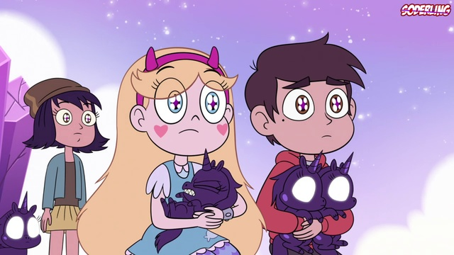

Кто вы из “Вселенной Стар”
Ты больше похожа на королеву Мун или Эклипсу, или быть может на будущую королеву Мьюни - Звёздочку Баттерфляй? Пройди этот тест, чтобы узнать, кто из персонажей мультсериала “Стар против сил зла” больше всего на тебя похож!
